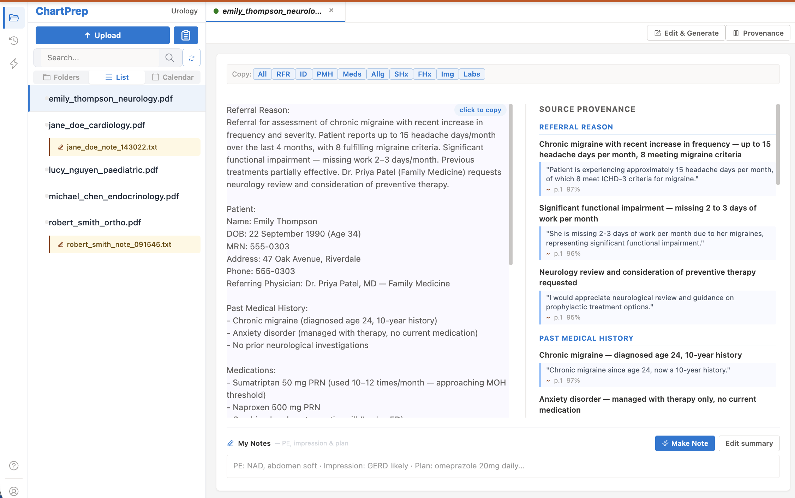

I lean on it every clinic week. It helps me deliver more thorough care, more efficiently.Dr. GarbensUrologist · Maple Urology
Most clinical AI today ships fluent prose, and the doctor has to re-read it to trust it. A 2026 VA evaluation of eleven ambient scribes found AI-generated notes scored lower than human notes on every one of the ten PDQI-9 quality measures.
We don't try to make the model write better. We change what the model is allowed to write. If a sentence can't be anchored to something in the source, the system doesn't produce it.
The model generates a polished note. The doctor has to compare it line-by-line to whatever the source was — the encounter, the referral, the chart — to know what's missing or invented.
Every sentence carries a marker pointing back to the span in the source it came from. Anything the system can't anchor never gets written. Checking the output means glancing at anchors, not re-reading prose.
ChartPrepper has processed over 3,000 referrals in daily clinical practice. A prospective accuracy audit of 50 referrals (785 individual statements) showed a ~0.64% error rate, with zero fabrications observed in the audited subset. For context, published benchmarks for prompt-engineered approaches sit around ~1.5% hallucination and 3.45% omission (Asgari et al., npj Digital Medicine, 2025) — though tasks and denominators differ, so this is not a direct comparison.
One product, three jobs it does — turning paper referrals into structured summaries, helping doctors write notes with citations to the source, and expanding short dictated seed notes into a full clinical note. All three share the same anchoring guarantee.
Faxed or scanned PDF referrals turned into structured clinical summaries. Every extracted fact points back to where in the document it came from. Anything we can't anchor isn't included.
The doctor adds their own notes and gets a finished clinical note. Each
sentence shows a small [1] pointing at its source. The markers
strip off automatically when you paste into the EMR.
The doctor types a brief seed note; the system expands it into the standard note structure. Anything not in the seed doesn't make it into the expansion.

VHA evaluation, 11 AI scribe tools
Reddy et al., Annals of Internal Medicine, 2026
Hanmu Yan, MD FRCSC. Practicing Canadian urologist. Every tool started as something he wanted in his own clinic, and he is the first person to use it on real patient work.
That means anything broken gets caught the same week it ships.
More about the founder →If the re-read problem rings true — and you want clinical AI built by someone who actually uses it in his own clinic — take a look at how it holds up in real use.